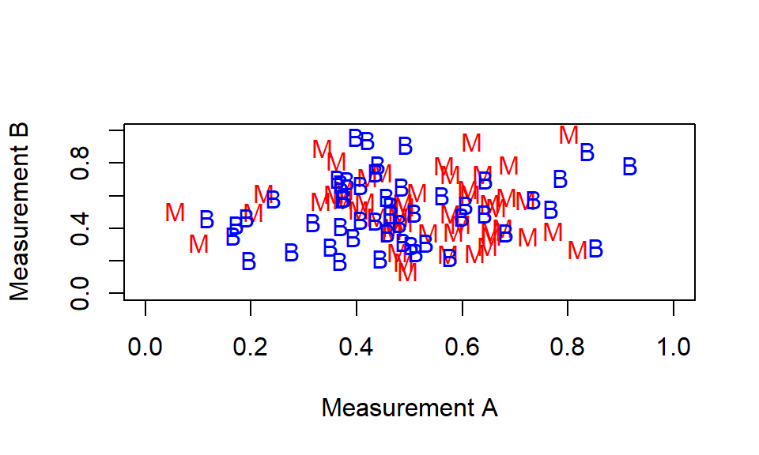
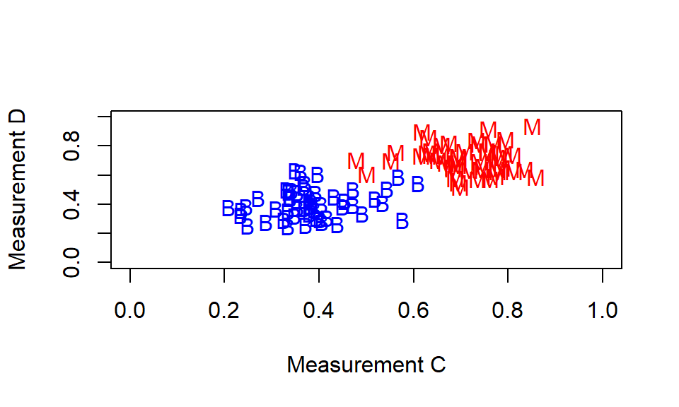

3 R Practical 3: detecting breast cancer
3.1 Introduction
A study of breast cancer diagnosis (and prognosis) based on the work of Prof. Olvi L. Mangasarian and Dr. William H. Wolberg is described at (http://pages.cs.wisc.edu/~olvi/uwmp/cancer.html). The aim is to diagnose breast cancer based on a technique known as Fine Needle Aspiration (FNA). An FNA sample is taken from a breast mass, and then examined on a microscopic slide. Various characteristics of the cell nuclei are then recorded (30 in total). The aim is then to determine whether the breast mass is cancerous or not (“malignant” or “benign”), based on these measurements only.
To design a diagnostic tool, a data set has been obtained of the 30 measurements for each patient, together with the true status of the breast mass (malignant or benign), obtained from a more invasive surgical procedure. Your task is then to investigate whether the true status can be determined from the 30 measurements only (which would mean patients could be diagnosed without surgery).
3.2 Data
There are two data sets (on Blackboard) for this practical. The first, cancer-training.csv is known as the training set. You will use this dataset to work out how to use the measurements to detect breast cancer. Each row corresponds to one patient, and there are 32 columns:
IDis a label for the patient (the patients used in this study are anonymous);statusrefers to whether the breast mass is malignant, (the patient has breast cancer), or benign (the patient does not have breast cancer);- the remaining 30 columns are the 30 different measurements taken on the patient’s cell nuclei. These have all been normalised to be on the same scale of 0 to 1. For example, the patient with ID 842302 has a vector of 30 measurements \[ x = (0.521,\, 0.023,\, 0.546,\ldots,0.419) \] describing her cell nuclei, with a corresponding class label of “malignant”. (We won’t worry with the definitions of these measurements in this practical1).
The second, cancer-test.csv is known as the test set. In this data set, the 30 measurements are given for three patients, but you are not told whether each breast mass is malignant or not: your task is to predict this, given what you have learned from the training set.
3.3 Tasks
- Inside your folder for this module, create another folder:
Practical 3.
- Download the two data sets
cancer-training.csvandcancer-test.csv, and the filePractical3.Rmd(all on Blackboard) and put them in yourPractical 3folder.
- Import the files
cancer-training.csvandcancer-test.csvinto R, storing them under the namescancer.trainingandcancer.testrespectively
You need to import your data by using suitable commands inside your .Rmd document. Do not import your data any other way.
- Copy and modify this lecture notes example: importing data
- Here, rather than
maths.csv, you are importing a file calledcancer-training.csv. - You need to store the result as
cancer.trainingrather thanmaths. - Repeat this process to get
cancer.test.
- The
xtabs()command can be used to make a table of frequencies for string (text) or factor data. For example:
## myVector
## a b
## 3 5Use this command to find out how many malignant cases and how many benign cases there are in the training data.
- See this example for extracting the values of a column from a data frame.
- Calculate a 95% confidence interval for the mean value of the
smoothness.meanvariable, assuming these observations are normally distributed. Treat the malignant and benign groups as a single group (in other words, ignore thestatusvariable).
- See this example for extracting the values of a column from a data frame.
- The confidence interval formula is given here.
- Use the functions
mean()andvar()for computing the sample mean and the sample variance, and see here for working with the \(t\)-distribution in R.
- Use the \(K\)-nearest neighbour algorithm (with \(K=1\)) from Chapter 2 in your notes, to estimate whether each patient in the test set has breast cancer or not. Note: you can select all but the first two columns from
cancer.trainingwith the commandcancer.training[, -(1:2)], and you can select all but the first column fromcancer.testwith the commandcancer.test[, -1]
You will now try some exploratory analysis to check your results.
- For the
cancer.trainingdata, produce a scatter plot of the variablessymmetry.seandtexture.seagainst each other.- Colour the points according to whether the breast mass was classified as malignant or benign.
- Annotate your plot with the three patient labels in
cancer.testdata, plotted at the appropriate coordinates. - Experiment with including the option
alpha = 0.5within yourgeom_point()command. Thealphavalue can be between 0 and 1 and controls the transparency of the points. This helps if points are being drawn over each other.
Some code to help you do the annotation is in the file Practical3.Rmd
See here for an example of drawing a scatter plot with colours to indicate groups.
You will see that it is not easy to tell whether the breast mass is cancerous or not for the three test patients, using only the two measurements symmetry.se and texture.se. This is because the malignant and benign points are all `jumbled up’: the location of a point on the plot doesn’t depend on whether the breast mass is malignant or benign. A plot of the measurements looks something like this:

We would like to identify two measurements where the separation into malignant and benign cases is clearer: something like the following.

We can calculate how well a particular measurement separates into malignant and benign cases, by computing
\[(|\bar{x}_m - \bar{x}_b|)/(s_m + s_b)\] for each measurement, with \(\bar{x}_m\) and \(s_m\) the sample mean and sample standard deviation of the malignant cases for that measurement, and \(\bar{x}_m\) and \(s_m\) the sample mean and sample standard deviation of the benign cases.
Run the code provided in
Practical3.Rmdto get the mean and standard deviation of the malignant observations, for each measurement.Copy and then modify the code to get the mean and standard deviation of the benign observations, for each measurement.
Obtain the statistic \((|\bar{x}_m - \bar{x}_b|)/(s_m + s_b)\) for each measurement. Use the command
abs()to obtain the absolute value. Store the result in a single vector calledscaled.differences.Inspect the vector
scaled.differencesto see which measurements are most suitable for detecting breast cancer: use the command
(You should find that symmetry.se and texture.se have the smallest values).
- Produce a scatter plot of your best two measurements against each other. As before:
- colour the points according to whether the breast mass was classified as malignant or benign.
- Annotate your plot with the three patient labels in
cancer.testdata, plotted at the appropriate coordinates. - Experiment with including the option
alpha = 0.5within yourgeom_point()command.
Now can you decide whether these three breast masses in your test set are malignant or benign? Compare the plot with your results from Task 6.
3.4 Data source
The data were obtained from (ftp://ftp.cs.wisc.edu/math-prog/cpo-dataset/machine-learn/cancer/WDBC/WDBC.dat) [Accessed 4/01/18]
You don’t need to, but if you want to find out what they are, they are described in the document at (ftp://ftp.cs.wisc.edu/math-prog/cpo-dataset/machine-learn/cancer/WDBC/WDBC.doc)↩︎